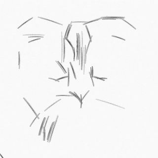

Robot Drawing Systems#
Robotic drawing is the use of robots to create drawings or artworks. This can be done in a variety of ways, such as using a robot arm with a pen or marker to draw on a surface, or using a robot to control a 3D printer to create a physical drawing. The robot can be programmed to create the drawing based on a set of instructions, or it can be controlled in real-time by a human artist. Robotic drawing can be used to create precise and intricate drawings, or to create large-scale artworks that would be difficult or impossible for a human to produce alone.
Procedural drawing is a method of creating drawings or graphics using a set of rules or procedures, rather than by drawing them by hand. These rules or procedures can be encoded in a computer program, which can then be used to generate the drawing automatically. Robotic drawing can be considered a type of procedural drawing, in that it involves the use of a robot to follow a set of instructions or rules in order to create a drawing. However, the term “procedural drawing” is generally used to refer to the creation of drawings using computer algorithms, rather than using a physical robot.
In both cases, the goal is to use a set of predetermined rules or instructions to create a drawing, rather than relying on the skill and creativity of a human artist. This can allow for the creation of highly complex and detailed drawings, or for the rapid generation of many different variations on a theme. Procedural drawing can also be used to create drawings that would be difficult or impossible for a human to create by hand, such as those with a very large scale or with intricate, repeating patterns.
Genetic algorithms are a type of optimization algorithm that are inspired by the process of natural evolution. They are commonly used to search for the best solution to a problem within a large search space.
In the context of procedural drawing, genetic algorithms can be used to generate drawings that are optimized for certain criteria. For example, a genetic algorithm could be used to generate a drawing that is aesthetically pleasing, or that incorporates certain elements or features. The algorithm would do this by generating a large number of different variations on the drawing, and then evaluating each one based on how well it meets the desired criteria. The best-performing variations would then be selected and used to create new variations, in a process that mimics the process of natural selection. This process would continue iteratively until the best possible solution is found.
Genetic algorithms can be used to generate a wide variety of different types of drawings, including abstract art, representational drawings, and 3D models. They can be particularly useful when the desired characteristics of the drawing are difficult to specify in precise terms, or when there are many different possible solutions that could be considered “good” or “correct”.
Deep learning is a type of machine learning that is based on neural networks, which are networks of algorithms that are designed to process and analyze large amounts of data. Deep learning algorithms have been very successful in a wide range of tasks, including image and speech recognition, natural language processing, and machine translation.
In the context of procedural drawing, deep learning algorithms could be used in a number of ways. For example, a deep learning algorithm could be trained to recognize and classify different types of drawings or art styles, or to generate drawings that are similar to a given set of examples. Deep learning algorithms could also be used to analyze and understand the structure and composition of existing drawings, in order to generate new drawings that are inspired by or based on those examples.
Another potential use for deep learning in procedural drawing is in the development of generative models, which are algorithms that can generate new examples that are similar to a set of training data. These models could be used to generate drawings or other types of art that are similar to a given set of examples, or to create new variations on an existing drawing.
Overall, the use of deep learning in procedural drawing could enable the creation of more complex and sophisticated drawings, and could also allow for the rapid generation of many different variations on a theme.
Generative deep learning models, such as generative adversarial networks (GANs) and variational autoencoders (VAEs), can be used to generate new images that have a similar style or content as a given input image. These models can be used in the context of procedural drawing to generate new strokes that have a similar style as a given image, or to generate a final drawing directly from an input image.
For example, you could use a GAN to generate a population of strokes that are similar in style to a given image, and then use a genetic algorithm to select the best strokes from this population to create the final drawing. Alternatively, you could use a VAE to generate a final drawing directly from an input image, by training the VAE to reconstruct the input image using a set of strokes as the output.
In both cases, the deep learning model would be used to guide the generation of the strokes, either by providing a set of strokes for the genetic algorithm to select from, or by generating the strokes directly. This would allow you to create procedural drawings that are more faithful to the style of the input image, and that are less reliant on the initial style information extracted by the CNN.
Project Outline#
A general outline for a procedural drawing project using genetic algorithms:
Define the problem: Clearly define the problem that you want to solve with your procedural drawing project. For example, you might want to generate abstract art that is aesthetically pleasing, or create drawings that are similar to a given set of examples.
Develop a representation: Determine how you will represent the drawings in your procedural drawing system. This might involve defining a set of shapes, colors, and other design elements that can be used to create the drawings, or it might involve using a more abstract representation such as a set of numbers or coordinates.
Implement a fitness function: Develop a function that will be used to evaluate the quality of the drawings generated by your system. This function should take as input a drawing and output a score indicating how well the drawing meets the desired criteria.
Create an initial population: Generate a set of initial drawings that will be used as the starting point for your genetic algorithm. These could be randomly generated, or they could be based on a given set of examples.
Iterate: Use your genetic algorithm to iteratively improve the quality of the drawings in your population. This will involve evaluating the drawings using the fitness function, selecting the best-performing drawings to be used as parents for the next generation, and generating new offspring by combining elements from the parent drawings. Continue this process until the desired level of quality is reached.
Evaluate and refine: Once you have reached the desired level of quality, evaluate the results of your procedural drawing system and consider any possible improvements or refinements that could be made. You may also want to consider extending the system to handle additional types of drawings or to solve additional problems.
Implementation#
Genetic Algorithms#
This is a simple example of how you might use a genetic algorithm in Python to generate a procedural drawing based on a given image:
iimport numpy as np
import matplotlib.pyplot as plt
# Load the image and convert it to grayscale
image = plt.imread('image.jpg')
gray = np.dot(image, [0.299, 0.587, 0.114])
# Set the size of the drawing
width = 100
height = 100
# Define the fitness function
def fitness(drawing):
# Calculate the difference between the drawing and the image
diff = np.abs(drawing - gray)
return np.sum(diff)
# Initialize the population of drawings
population = np.random.randint(0, 255, size=(100, height, width))
# Set the number of generations
generations = 100
# Set the mutation rate
mutation_rate = 0.01
# Evolve the population
for i in range(generations):
# Evaluate the fitness of each drawing
scores = [fitness(d) for d in population]
# Select the fittest half of the population
fittest_idx = np.argsort(scores)[:50]
fittest = population[fittest_idx]
# Generate offspring from the fittest half of the population
offspring = fittest.copy()
for child in offspring:
# Mutate the child with a probability of mutation_rate
for row in child:
for pixel in row:
if np.random.rand() < mutation_rate:
pixel = np.random.randint(0, 255)
# Replace the least fit half of the population with the offspring
population[fittest_idx] = offspring
# Select the fittest drawing
fittest_idx = np.argmin(scores)
fittest_drawing = population[fittest_idx]
# Display the fittest drawing
plt.imshow(fittest_drawing, cmap='gray')
plt.show()
This code will load the image ‘image.jpg’ and convert it to grayscale. It will then create a blank canvas for the drawing, and define a fitness function that measures the difference between the drawing and the image. The code will then use a genetic algorithm to iteratively improve the quality of the drawings in the population, by selecting the best-performing drawings as parents and generating new offspring by combining elements from the parent drawings. Finally, it will select the best drawing from the final population and display it using Matplotlib.
You can modify this code to suit your specific needs. For example, you might want to use a different size for the drawing, or you might want to use a different color map. You could also modify the fitness function or the genetic algorithm itself to optimize for different criteria.
Deep Learning#
Here is an example of how you might use deep learning in Python to extract styles from an image and guide the direction, shade, and details of a procedural drawing:
import numpy as np
import matplotlib.pyplot as plt
import tensorflow as tf
# Load the image and convert it to grayscale
image = plt.imread('image.jpg')
gray = np.dot(image, [0.299, 0.587, 0.114])
# Set the size of the drawing
width = 100
height = 100
# Create an empty canvas for the drawing
drawing = np.zeros((height, width))
# Build a convolutional neural network (CNN) to extract style information from the image
model = tf.keras.Sequential()
model.add(tf.keras.layers.Conv2D(32, (3, 3), activation='relu', input_shape=(height, width, 1)))
model.add(tf.keras.layers.MaxPooling2D((2, 2)))
model.add(tf.keras.layers.Conv2D(64, (3, 3), activation='relu'))
model.add(tf.keras.layers.MaxPooling2D((2, 2)))
model.add(tf.keras.layers.Conv2D(64, (3, 3), activation='relu'))
# Compile and fit the model
model.compile(optimizer='adam', loss='mean_squared_error')
model.fit(gray[np.newaxis, :, :, np.newaxis], np.zeros((1, height // 4, width // 4, 64)), epochs=10)
# Extract the style information from the image
style = model.predict(gray[np.newaxis, :, :, np.newaxis])[0]
# Use the style information to guide the direction, shade, and details of the drawing
for y in range(height):
for x in range(width):
# Use the style information to determine the direction of the stroke
direction = np.argmax(style[y // 4, x // 4, :])
# Use the style information to determine the shade of the stroke
shade = style[y // 4, x // 4, direction]
# Use the style information to determine the details of the stroke
details = style[y // 4, x // 4, direction + 32]
# Draw the stroke using the determined direction, shade, and details
# ...
# Display the resulting drawing
plt.imshow(drawing, cmap='gray')
plt.show()
This code will load the image ‘image.jpg’ and convert it to grayscale. It will then build a convolutional neural network (CNN) to extract style information from the image, and use this information to guide the direction, shade, and details of the drawing as it iterates over the pixels in the image. Finally, it will display the resulting drawing using Matplotlib.
You can modify this code to suit your specific needs. For example, you might want to use a different size for the drawing, or you might want to use a different color map. You could also modify the CNN architecture or the way in which the style information is used to guide the drawing.
Combined Approach#
This is an example of how you might use genetic algorithms in Python to generate a population of strokes for a procedural drawing using style information extracted by a convolutional neural network (CNN):
import numpy as np
import matplotlib.pyplot as plt
import tensorflow as tf
# Load the image and convert it to grayscale
image = plt.imread('image.jpg')
gray = np.dot(image, [0.299, 0.587, 0.114])
# Set the size of the drawing
width = 100
height = 100
# Build a CNN to extract style information from the image
model = tf.keras.Sequential()
model.add(tf.keras.layers.Conv2D(32, (3, 3), activation='relu', input_shape=(height, width, 1)))
model.add(tf.keras.layers.MaxPooling2D((2, 2)))
model.add(tf.keras.layers.Conv2D(64, (3, 3), activation='relu'))
model.add(tf.keras.layers.MaxPooling2D((2, 2)))
model.add(tf.keras.layers.Conv2D(64, (3, 3), activation='relu'))
# Extract the style information from the image
style = model.predict(gray[np.newaxis, :, :, np.newaxis])[0]
# Set the number of strokes in the population
population_size = 1000
# Set the width of the strokes
stroke_width = 5
# Create an initial population of strokes based on the style information
population = []
for i in range(population_size):
# Use the style information to determine the direction of the stroke
direction = np.argmax(style[i // (population_size // (height // stroke_width)), i // (population_size // (width // stroke_width)), :])
# Use the style information to determine the shade of the stroke
shade = style[i // (population_size // (height // stroke_width)), i // (population_size // (width // stroke_width)), direction]
# Use the style information to determine the details of the stroke
details = style[i // (population_size // (height // stroke_width)), i // (population_size // (width // stroke_width)), direction + 32]
# Create a stroke using the determined direction, shade, and details
stroke = np.zeros((height // stroke_width, width // stroke_width))
stroke[:, :] = shade
population.append(stroke)
# Define the fitness function
def fitness(strokes, image):
# Calculate the mean squared error between the strokes and the image
mse = np.mean((strokes - image)**2)
# Calculate the total length of the strokes
total_length = np.sum(strokes)
# Calculate the average length of the strokes
avg_length = total_length / len(strokes)
# Calculate the fitness score as a combination of the MSE and average stroke length
score = mse * avg_length
return score
# Set the number of generations to evolve the strokes
generations = 100
# Iterate over the generations
for i in range(generations):
# Evaluate the fitness of each stroke in the population
scores = [fitness(s, gray) for s in population]
# Select the best-performing strokes to be used as parents
parents = [population[i] for i in np.argsort(scores)[:10]]
# Generate new offspring by combining elements from the parent strokes
offspring = []
for j in range(population_size - 10):
parent1 = np.random.choice(parents)
parent2 = np.random.choice(parents)
child = (parent1 + parent2) / 2
offspring.append(child)
# Replace the current population with the new offspring
population = offspring
# Select the best strokes from the final population
best_strokes = population[np.argmin(scores)]
# Create the final drawing using the best strokes
drawing = np.zeros((height, width))
for i, stroke in enumerate(best_strokes):
drawing[i * stroke_width:(i + 1) * stroke_width, :] = stroke
# Display the resulting drawing
plt.imshow(drawing, cmap='gray')
plt.show()
This code uses a CNN to extract style information from a given image, and then uses this information to guide the creation of a population of strokes using a genetic algorithm. It iteratively improves the quality of the strokes in the population, and then selects the best strokes from the final population to create the final drawing. Finally, it displays the resulting drawing using Matplotlib.
Generative Approach#
This is an example of how you might use a GAN to generate a population of strokes that are similar in style to a given image:
Load the image and convert it to grayscale
Set the size of the drawing
Build the GAN:
Define the generator model
Define the discriminator model
Couple the generator and discriminator into the GAN
Compile the GAN
Train the GAN:
Generate a batch of fake strokes using the generator
Select a batch of real strokes from the image
Concatenate the fake and real strokes
Create the labels for the fake and real strokes
Train the discriminator on the fake and real strokes
Generate a batch of random noise
Use the noise to generate a batch of fake strokes
Train the GAN by setting the labels for the fake strokes to be ones
References#
Sketch Generation with Drawing Process Guided by Vector Flow and Grayscale#
Image Evolution
Final generated image (RGB)



Fast Robotic Pencil Drawing#
Image Evolution
Final generated image
Original template